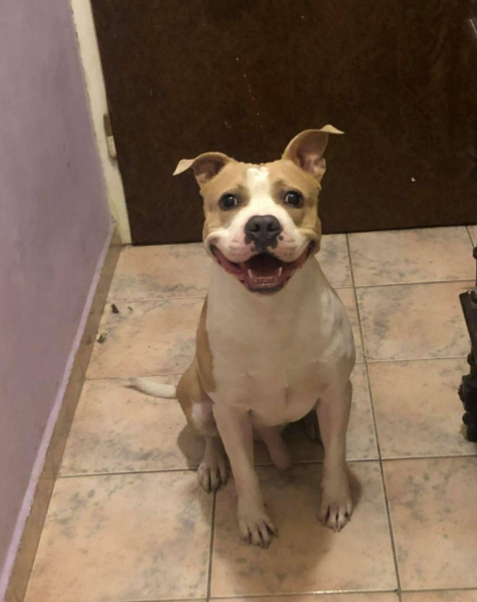

Staffordshire Terrier
Az amerikai staffordshire terrier egy közepes méretű, rövid szőrű kutyafajta, melynek eredete Angliába vezethető vissza. A XIX. század végén és napjainkig az amstaff nagy népszerűségnek örvend és az Amerikai Kennel Klub (AKC) 1936-ban elismerte és regisztrálta őket staffordshire terrier néven.